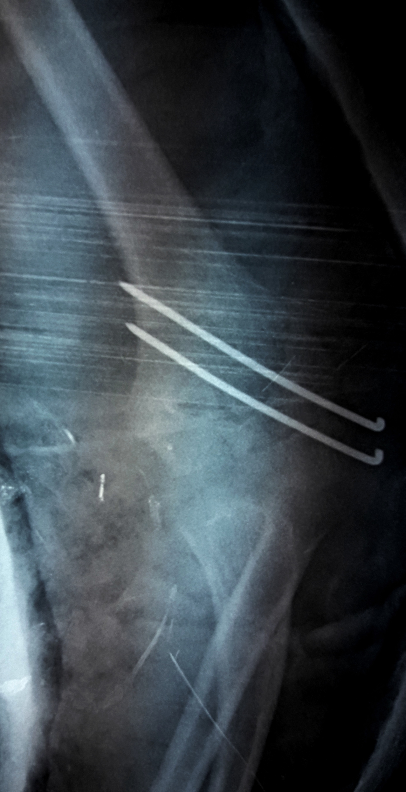
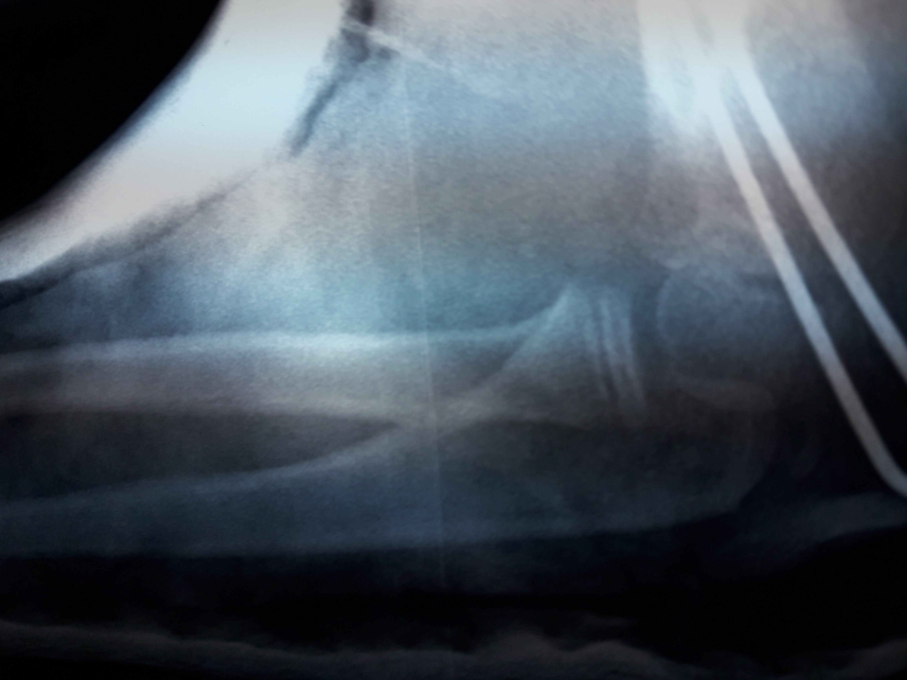
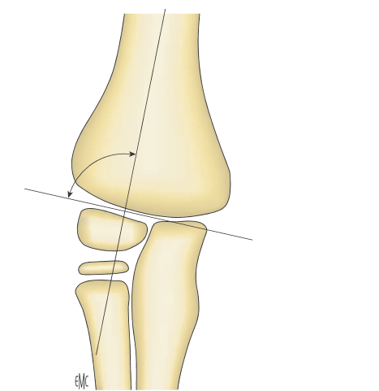
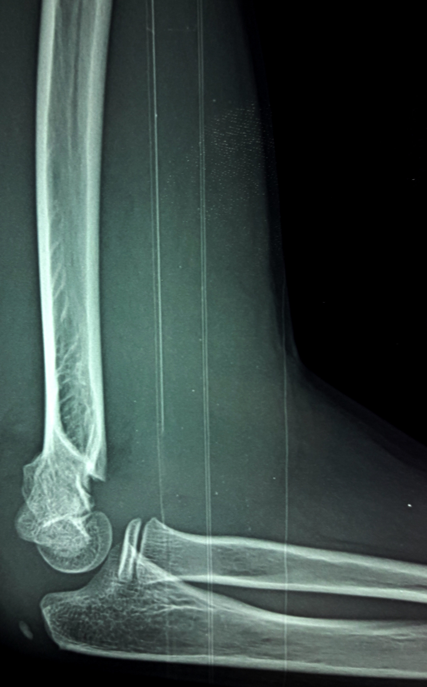
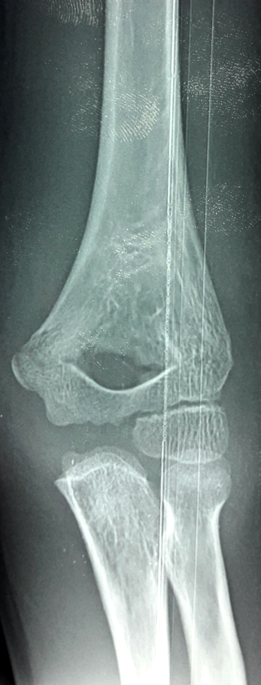
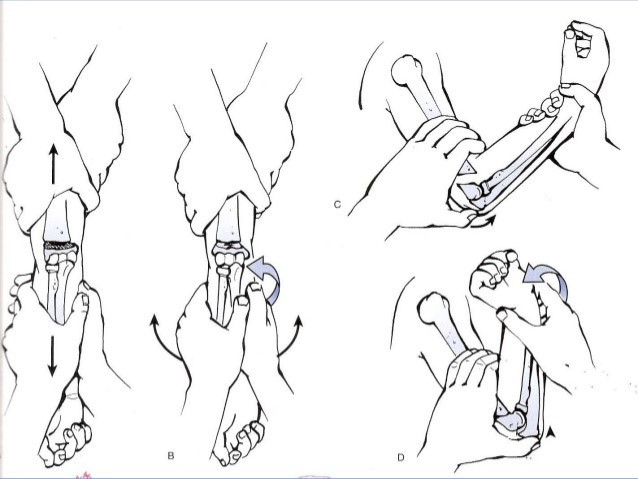

Coude
Cas Clinique 2
Traumatisme fermé du membre supérieur gauche, chez un enfant de 9ans, avec réception sur la paume de la main.
L’examen a trouvé
une attitude du traumatisé du membre supérieur gauche,
une douleur exquise à la palpation de l’extrémité inférieur de l’humérus gauche,
des pouls distaux palpable et un examen neurologique normal.
La radiographie faite, a montré: (fig1, fig2)
Réponse 1
Fracture supra-condylienne gauche stade II par mécanisme en extension.
Réponse 2
Le traitement consiste en une réduction sous anesthésie générale, suivie d’une ostéosynthèse par broches selon la technique de JUDET.(fig4, fig5)


Réponse 3
- ✔ Sur une radiographie de profil, l’axe de la palette humérale doit créer avec l’axe de la diaphyse humérale un angle de 30 à 40° .
- ✔ Sur une radiographie de face, l’angle entre l’axe de la diaphyse humérale et la ligne passant par la physe du condyle latéral (angle de BAUMANN) doit être d’une valeur de 72° ± 5° (il permet d’apprécier le risque de cubitus varus). (fig7)

Réponse 4
- Hospitalisation en urgence et prise de voie veineuse.
- Traitement antibiotique mis en route immédiatement par voie veineuse avec une bithérapie large ciblant le staphylocoque (pénicilline M de type flucloxacilline) et un aminoside.
- Immobilisation plâtrée en parallèle au traitement antibiotique, mise en place d'un plâtre cruro-pédieux fenêtré en regard de la métaphyse distale du fémur.
La prise en charge sera :


Commentaire 1
Commentaire 2
Indications dans les fractures en extension de l’enfant:
➢ Pour les fractures de stade I non déplacées, la méthode de JUDET ne présente pas d’intérêt.
➢ Pour les fractures de stade II et III, la méthode de stabilisation est par contre plus discutée:
si le BLOUNT offre l’avantage de la simplicité d’exécution, il nécessite avant tout l’absence de toutes contre-indication. Par ailleurs il nécessite l’assurance d’une famille coopérante et une surveillance rigoureuse d’au moins 48 heures.
Quand ces conditions ne sont pas remplies, la méthode de JUDET est justifiée. Elle se fait après la réduction de la fracture. Cette dernière est stabilisée par deux broches de Kirschner introduites le long du côté latéral, par voie percutanée. Une alternative est l’utilisation de deux broches de Kirschner croisées en évitant consciencieusement de blesser le nerf ulnaire.
➢ pour les fractures de stade IV, les risques de fracture instable, dont le diagnostic n’est pas toujours facile devant un coude très œdèmatié, nous fait proposer une réduction orthopédique suivie d’une fixation percutanée par broches.
➢ Pour toutes ces fractures, en l’absence d’une réduction anatomique parfaite ne permettant pas un brochage correct, la réduction chirurgicale s’impose.
La réduction de la fracture se fait sur un enfant installé à plat dos, en bord de table. L’aide prend à l’épaule à pleines mains pour une contre-extension.
Le chirurgien lui fait face, empoignant l’avant-bras. Il y a plusieurs temps dans cette réduction (fig6).
• La traction dans l’axe du bras se fait de manière douce et prolongée pour préserver le périoste, coude en extension ou même en légère hyper-extension pour détendre le périoste postérieur.
• La translation latérale ou médiale
• La translation antérieure en flexion du coude
• Enfin le blocage par pronation ou par supination de l’avant-bras selon que le périoste interne ou externe semblait continu.

Commentaire 3
Selon les critères de MARION et LAGRANGE les résultats sont appréciés comme suit:
• Résultat parfait:
le coude est identique cliniquement et radiologiquement au côté opposé.
• Résultat bon:
la fonction du coude est bonne, mais il persiste:
➔ soit un léger déficit de la mobilité inférieur à 10° en flexion et/ou en extension
➔ soit un défaut d'axe inférieur à 10°
➔ soit une déformation inesthétique même minime
➔ soit un léger déficit de la force musculaire
• Résultat médiocre:
la fonction du coude est anormale, il s'agit:
➔ soit d'un déficit de la mobilité supérieur à 20°
➔ soit un défaut d'axe supérieur à 10°
➔ soit un déficit important de la force musculaire
• Résultat mauvais:
mauvaise fonction du coude avec:
➔ soit un déficit de la mobilité supérieure à 50°
➔ soit un défaut d'axe de 20°
➔ soit un déficit plus important de la force musculaire
➔ soit un trouble moteur ou sensitif
Commentaire 1
Les fractures en extension sont classées, selon LAGRANGE et RIGAULT, comme suit (fig3):Fracture en extension:
• stade I : uniquement la corticale antérieure est rompue, non déplacée
• stade II : fracture des 2 corticales, bascule postérieure pure, le périoste postérieur reste toujours intact
• stade III: dès qu'il y a une rotation ou une translation, mais les 2 fragments restent en contact l'un avec l'autre
• stade IV: déplacement complet, il n'y a plus de contact entre les fragments

Références
Marquis CP, Cheung G, Dwyer J, Frederick D, Emery G. Supracondylar fractures of the humerus.
Current Orthopaedics 2008; 22:62-69.Lahyaoui L.. Les fractures supracondyliennes de l’humérus chez l’enfant (à propos de 370 cas)
Thèse de médecine Fès 2010,n°74.Mohammed S et Rymaszewski LA. Supracondylar fractures of the distal humerus in children.
Injury 1995;26:487-9.Parmaksizoglu AS, Ozkaya u, Bilgili F, Sayan E, Kabukcuoglu Y. Closed reduction of the pediatric supracondylar humerus fractures: the “joystick” method.
Arch Orthop Trauma Surg 2009;129:1225-31.